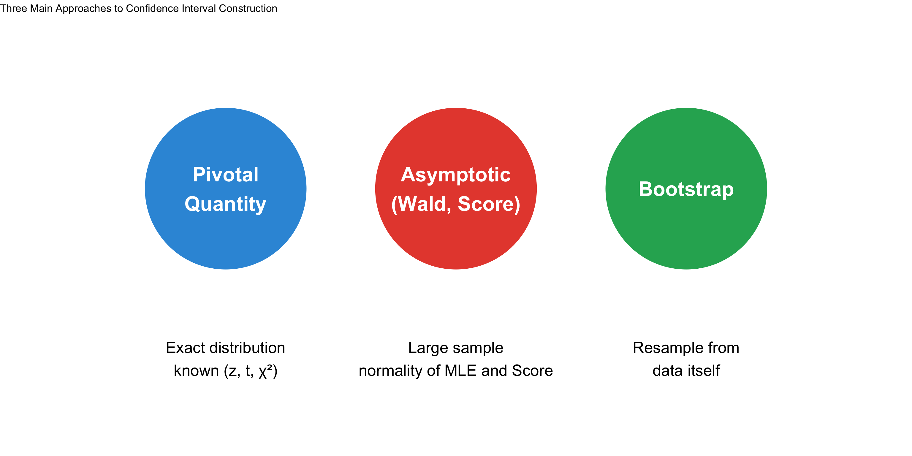
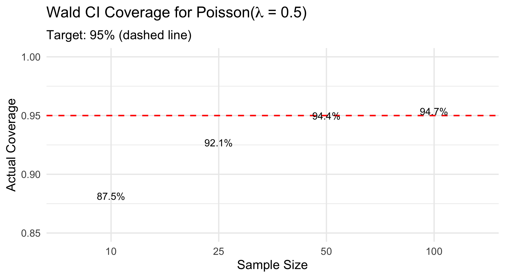
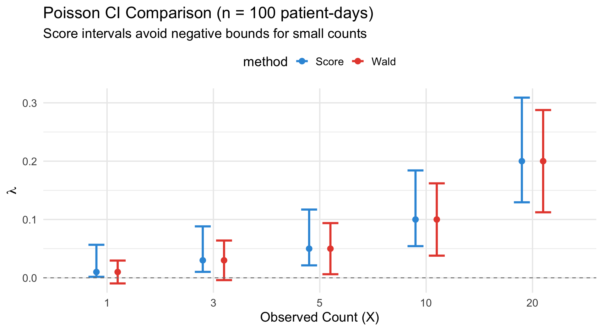
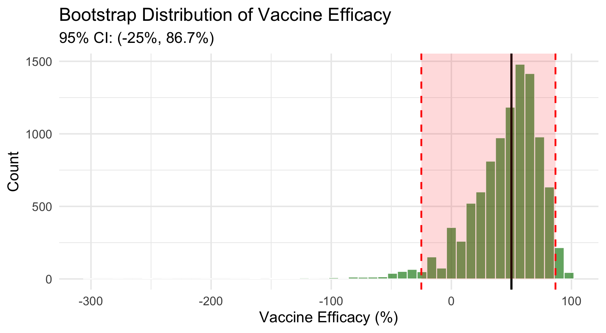
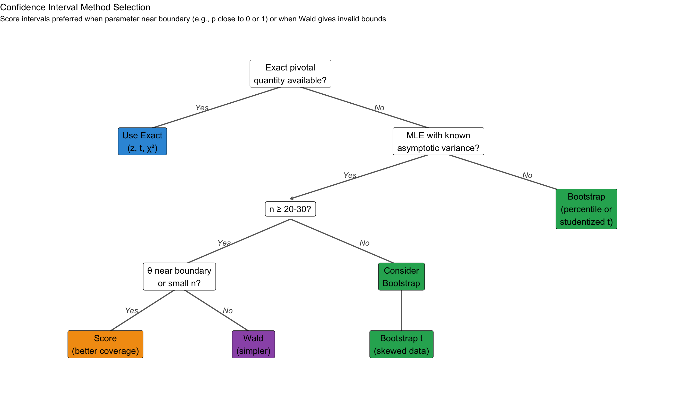

MLE (rate per 1000 patient-days): 16 95% Wald CI: 4.913 27.087 per 1000 patient-daysBSTA 551: Statistical Inference
2026-02-02
Today’s Goals:

| Parameter | Method | Formula |
|---|---|---|
| \(\mu\) (\(\sigma\) known) | Pivotal (z) | \(\bar{x} \pm z_{\alpha/2}\frac{\sigma}{\sqrt{n}}\) |
| \(\mu\) (\(\sigma\) unknown) | Pivotal (t) | \(\bar{x} \pm t_{\alpha/2, n-1}\frac{s}{\sqrt{n}}\) |
| \(p\) (proportion) | Wald | \(\hat{p} \pm z_{\alpha/2}\sqrt{\frac{\hat{p}(1-\hat{p})}{n}}\) |
| \(p\) (proportion) | Score | \(\frac{\hat{p} + \frac{z^2}{2n} \pm z\sqrt{\frac{\hat{p}(1-\hat{p})}{n} + \frac{z^2}{4n^2}}}{1 + z^2/n}\) |
| \(\lambda\) (Poisson) | Score | \(\frac{X + z^2/2 \pm z\sqrt{X + z^2/4}}{n}\) |
| Any \(\theta\) | Bootstrap Percentile | \((\hat{\theta}^*_{\alpha/2}, \hat{\theta}^*_{1-\alpha/2})\) |
| Any \(\theta\) | Simple Bootstrap t | \(\hat{\theta} \pm t_{\alpha/2, n-1} \cdot SE_{boot}\) |
| Any \(\theta\) | Studentized Bootstrap t | \((\hat{\theta} - t^*_{1-\alpha/2} \cdot SE_{\hat{\theta}}, \; \hat{\theta} - t^*_{\alpha/2} \cdot SE_{\hat{\theta}})\) |
Valid Interpretations
Invalid Interpretations
Asymptotic Normality of MLEs
Under regularity conditions, the MLE \(\hat{\theta}\) is asymptotically normal: \[\hat{\theta} \stackrel{approx}{\sim} N\left(\theta, \frac{1}{I_n(\theta)}\right)\] where \(I_n(\theta) = nI_1(\theta)\) is the total Fisher information for \(n\) observations, and \(I_1(\theta)\) is the Fisher information for a single observation.
The Wald CI plugs in \(\hat{\theta}\) for unknown quantities in the variance: \[\hat{\theta} \pm z_{\alpha/2} \cdot \widehat{SE}(\hat{\theta})\]
where \(\widehat{SE}(\hat{\theta}) = \sqrt{1/I_n(\hat{\theta})}\) or the observed information.
Setting: Count data \(X_1, \ldots, X_n \stackrel{iid}{\sim} \text{Poisson}(\lambda)\)
MLE: \(\hat{\lambda} = \bar{X}\)
Fisher Information: \(I_1(\lambda) = 1/\lambda\), so \(I_n(\lambda) = n/\lambda\)
Asymptotic Variance: \(\text{Var}(\hat{\lambda}) \approx 1/I_n(\lambda) = \lambda/n\)
Wald CI for Poisson Rate
\[\hat{\lambda} \pm z_{\alpha/2} \sqrt{\frac{\hat{\lambda}}{n}}\]
A hospital monitors central line-associated bloodstream infections (CLABSI). Over \(n = 500\) patient-days, they observe \(X = 8\) infections.
MLE (rate per 1000 patient-days): 16 95% Wald CI: 4.913 27.087 per 1000 patient-daysNote: The lower bound is positive, but for very small counts, Wald can give negative bounds!
Setting: Failure times \(X_1, \ldots, X_n \stackrel{iid}{\sim} \text{Exp}(\lambda)\)
MLE: \(\hat{\lambda} = 1/\bar{X}\)
Fisher Information: \(I_1(\lambda) = 1/\lambda^2\), so \(I_n(\lambda) = n/\lambda^2\)
Asymptotic Variance: \(\text{Var}(\hat{\lambda}) \approx 1/I_n(\lambda) = \lambda^2/n\)
Wald CI for Exponential Rate
\[\hat{\lambda} \pm z_{\alpha/2} \frac{\hat{\lambda}}{\sqrt{n}}\]
A clinical trial measures time (hours) until symptom relief for \(n = 30\) patients taking a new analgesic:
# Simulated relief times (hours)
set.seed(551)
relief_times <- rexp(30, rate = 0.5) # True rate = 0.5 (mean = 2 hours)
n <- length(relief_times)
lambda_hat <- 1 / mean(relief_times)
# Wald CI for rate
se_lambda <- lambda_hat / sqrt(n)
wald_ci_lambda <- lambda_hat + c(-1, 1) * qnorm(0.975) * se_lambda
cat("Sample mean relief time:", round(mean(relief_times), 2), "hours\n")Sample mean relief time: 2.01 hoursMLE of rate: 0.498 per hour95% Wald CI for rate: 0.32 0.677 per hour# Simulation: Wald coverage for Poisson with small lambda
set.seed(551)
n_sim <- 5000
sample_sizes <- c(10, 25, 50, 100)
true_lambda <- 0.5
coverage_results <- expand_grid(n = sample_sizes, sim = 1:n_sim) |>
mutate(
x_total = map_dbl(n, ~sum(rpois(.x, true_lambda))),
lambda_hat = x_total / n,
se = sqrt(lambda_hat / n),
lower = lambda_hat - 1.96 * se,
upper = lambda_hat + 1.96 * se,
covers = (lower < true_lambda) & (true_lambda < upper)
) |>
group_by(n) |>
summarise(coverage = mean(covers), .groups = "drop")
ggplot(coverage_results, aes(x = factor(n), y = coverage)) +
geom_col(fill = "steelblue", alpha = 0.8, width = 0.6) +
geom_hline(yintercept = 0.95, linetype = "dashed", color = "red", linewidth = 1) +
geom_text(aes(label = paste0(round(coverage * 100, 1), "%")),
vjust = -0.5, size = 5) +
labs(x = "Sample Size", y = "Actual Coverage",
title = expression("Wald CI Coverage for Poisson(" * lambda * " = 0.5)"),
subtitle = "Target: 95% (dashed line)") +
ylim(0.85, 1) +
theme_minimal(base_size = 18)
Takeaway: Wald intervals can have poor coverage for small samples or extreme parameters.
Often we want a CI for a function of the parameter, not the parameter itself.
Examples:
Question: If \(\hat{\theta} \stackrel{approx}{\sim} N(\theta, \sigma^2_{\hat{\theta}})\), what is the distribution of \(g(\hat{\theta})\)?
Delta Method (First-Order Approximation)
If \(\hat{\theta} \stackrel{approx}{\sim} N(\theta, \sigma^2_{\hat{\theta}})\) and \(g\) is differentiable at \(\theta\) with \(g'(\theta) \neq 0\), then:
\[g(\hat{\theta}) \stackrel{approx}{\sim} N\left(g(\theta), \; [g'(\theta)]^2 \cdot \sigma^2_{\hat{\theta}}\right)\]
Intuition: Taylor expansion around \(\theta\): \[g(\hat{\theta}) \approx g(\theta) + g'(\theta)(\hat{\theta} - \theta)\]
So \(\text{Var}[g(\hat{\theta})] \approx [g'(\theta)]^2 \cdot \text{Var}(\hat{\theta})\)
Practical Formula
\[\widehat{SE}[g(\hat{\theta})] = |g'(\hat{\theta})| \cdot \widehat{SE}(\hat{\theta})\]
Wald CI for \(g(\theta)\): \[g(\hat{\theta}) \pm z_{\alpha/2} \cdot |g'(\hat{\theta})| \cdot \widehat{SE}(\hat{\theta})\]
Setting: \(X_1, \ldots, X_n \sim \text{Exp}(\lambda)\), want CI for mean \(\mu = 1/\lambda = g(\lambda)\)
Step 1: We have \(\hat{\lambda} = 1/\bar{X}\) with \(SE(\hat{\lambda}) \approx \hat{\lambda}/\sqrt{n}\)
Step 2: Compute derivative: \(g(\lambda) = 1/\lambda \Rightarrow g'(\lambda) = -1/\lambda^2\)
Step 3: Apply delta method: \[SE(\hat{\mu}) = |g'(\hat{\lambda})| \cdot SE(\hat{\lambda}) = \frac{1}{\hat{\lambda}^2} \cdot \frac{\hat{\lambda}}{\sqrt{n}} = \frac{1}{\hat{\lambda}\sqrt{n}} = \frac{\bar{X}}{\sqrt{n}}\]
This is just \(SE(\bar{X}) = s/\sqrt{n}\) when \(s \approx \bar{X}\) for exponential data!
# From earlier: relief_times data
xbar <- mean(relief_times)
n <- length(relief_times)
lambda_hat <- 1 / xbar
# Delta method SE for mean (mu = 1/lambda)
# g'(lambda) = -1/lambda^2, so SE(mu) = SE(lambda)/lambda^2 = 1/(lambda * sqrt(n))
se_mu_delta <- 1 / (lambda_hat * sqrt(n))
# Equivalently: se_mu_delta = xbar / sqrt(n)
cat("Delta method SE for mean:", round(se_mu_delta, 3), "\n")Delta method SE for mean: 0.366 Direct SE (s/sqrt(n)): 0.287 95% CI for mean relief time: 1.29 2.72 hoursSetting: \(X \sim \text{Binomial}(n, p)\), want CI for odds \(\omega = p/(1-p)\)
Step 1: We have \(\hat{p} = X/n\) with \(SE(\hat{p}) = \sqrt{\frac{\hat{p}(1-\hat{p})}{n}}\)
Step 2: Define \(g(p) = \frac{p}{1-p}\) and compute the derivative: \[g'(p) = \frac{(1-p) \cdot 1 - p \cdot (-1)}{(1-p)^2} = \frac{1-p+p}{(1-p)^2} = \frac{1}{(1-p)^2}\]
Step 3: Apply delta method: \[SE(\hat{\omega}) = |g'(\hat{p})| \cdot SE(\hat{p}) = \frac{1}{(1-\hat{p})^2} \cdot \sqrt{\frac{\hat{p}(1-\hat{p})}{n}} = \frac{\sqrt{\hat{p}(1-\hat{p})}}{(1-\hat{p})^2\sqrt{n}}\]
SE(p̂) = 0.0442 g'(p̂) = 1/(1-p̂)² = 2.56 SE(ω̂) = |g'(p̂)| × SE(p̂) = 2.56 × 0.0442 = 0.1131 Estimated odds: 0.6 95% CI for odds: 0.378 0.822For positive parameters (rates, odds), working on the log scale often improves coverage.
Why? The sampling distribution of \(\log(\hat{\omega})\) is often more symmetric than \(\hat{\omega}\).
Step 1: Define \(h(\omega) = \log(\omega)\), so \(h'(\omega) = 1/\omega\)
Step 2: Apply delta method to get SE of log-odds: \[SE[\log(\hat{\omega})] = |h'(\hat{\omega})| \cdot SE(\hat{\omega}) = \frac{1}{\hat{\omega}} \cdot SE(\hat{\omega})\]
Step 3: Build CI on log scale, then exponentiate back.
log(ω̂) = -0.5108 h'(ω̂) = 1/ω̂ = 1.6667 SE[log(ω̂)] = |h'(ω̂)| × SE(ω̂) = 1.6667 × 0.1131 = 0.1886 95% CI for log(odds): -0.88 -0.141 95% CI for odds (direct Wald): 0.378 0.822 95% CI for odds (log-transformed): 0.415 0.868The log-transformed CI is asymmetric around the estimate — often more appropriate for positive quantities!
| Original Parameter | Function g(θ) | Derivative g’(θ) | SE[g(θ̂)] |
|---|---|---|---|
| λ (Exp rate) | μ = 1/λ | -1/λ² | 1/(λ̂√n) |
| p (proportion) | odds = p/(1-p) | 1/(1-p)² | SE(p̂)/(1-p̂)² |
| p (proportion) | log-odds = log(p/(1-p)) | 1/(p(1-p)) | 1/√(np̂(1-p̂)) |
| λ (Poisson) | log(λ) | 1/λ | 1/√(nλ̂) |
Score Interval Derivation
The score interval inverts the score test. The score statistic is: \[S(\theta) = \frac{[\ell'(\theta)]^2}{I_n(\theta)} \stackrel{approx}{\sim} \chi^2_1\]
The \(100(1-\alpha)\%\) score CI contains all \(\theta\) such that \(S(\theta) \leq z_{\alpha/2}^2\).
Equivalently: Find all \(\theta\) where \[\left|\frac{\ell'(\theta)}{\sqrt{I_n(\theta)}}\right| \leq z_{\alpha/2}\]
Components of the Score Statistic
\[S(\theta) = \frac{[\ell'(\theta)]^2}{I_n(\theta)} = \frac{(\text{Score Function})^2}{\text{Fisher Information}}\]
Numerator: \(\ell'(\theta) = \frac{\partial}{\partial\theta}\log L(\theta) = \sum_{i=1}^n \frac{\partial}{\partial\theta}\log f(X_i; \theta)\) is the score function — measures how much the log-likelihood is “pulling” away from \(\theta\)
Denominator: \(I_n(\theta) = \text{Var}[\ell'(\theta)] = -E[\ell''(\theta)] = nI_1(\theta)\) is the total Fisher information — the variance of the score function (which equals \(n\) times the single-observation information)
Intuition: At the true \(\theta\), the score function should be close to zero (since MLE maximizes likelihood). The score statistic measures how far \(\ell'(\theta)\) is from zero, standardized by its variance.
| Aspect | Wald Interval | Score Interval |
|---|---|---|
| Test statistic | \(\frac{\hat{\theta} - \theta}{\sqrt{I_n(\hat{\theta})^{-1}}}\) | \(\frac{\ell'(\theta)}{\sqrt{I_n(\theta)}}\) |
| Variance evaluated at | \(\hat{\theta}\) (the MLE) | \(\theta\) (the hypothesized value) |
| Computation | Direct formula | Solve equation in \(\theta\) |
| Coverage | Can be poor for extreme \(\theta\) | Generally better |
| Bounds | May violate parameter space | Respects constraints |
Key insight: Score intervals evaluate variance at each candidate \(\theta\), not just at \(\hat{\theta}\)!
Setting: \(X \sim \text{Binomial}(n, p)\), \(\hat{p} = X/n\)
Score equation: Find \(p\) such that \[\frac{(\hat{p} - p)^2}{p(1-p)/n} \leq z_{\alpha/2}^2\]
Rearranging: \[(\hat{p} - p)^2 \leq z^2 \cdot \frac{p(1-p)}{n}\] \[n(\hat{p} - p)^2 \leq z^2 p(1-p)\] \[n\hat{p}^2 - 2n\hat{p}p + np^2 \leq z^2p - z^2p^2\]
Collecting terms in \(p\): \[(n + z^2)p^2 - (2n\hat{p} + z^2)p + n\hat{p}^2 \leq 0\]
This is a quadratic in \(p\) — solve with the quadratic formula!
The Wilson (Score) interval endpoints come from solving the quadratic:
\[p = \frac{2n\hat{p} + z^2 \pm \sqrt{z^4 + 4n\hat{p}z^2(1-\hat{p})}}{2(n + z^2)}\]
The 95% Score (Wilson) CI for \(p\) is: \[\left(\frac{\hat{p} + \frac{z^2}{2n} - z\sqrt{\frac{\hat{p}(1-\hat{p})}{n} + \frac{z^2}{4n^2}}}{1 + \frac{z^2}{n}}, \; \frac{\hat{p} + \frac{z^2}{2n} + z\sqrt{\frac{\hat{p}(1-\hat{p})}{n} + \frac{z^2}{4n^2}}}{1 + \frac{z^2}{n}}\right)\]
p̂ = 0.06 Wald CI: -0.0058 0.1258 (Note: lower bound close to 0)Score CI: 0.0206 0.1622Setting: \(X \sim \text{Poisson}(n\lambda)\) (sum of \(n\) iid Poisson(\(\lambda\)))
MLE: \(\hat{\lambda} = X/n\)
Variance under \(\lambda\): \(\text{Var}(\hat{\lambda}) = \lambda/n\)
Score equation: Find \(\lambda\) such that \[\frac{(\hat{\lambda} - \lambda)^2}{\lambda/n} \leq z^2\]
Rearranging: \[n(\hat{\lambda} - \lambda)^2 \leq z^2 \lambda\] \[n\hat{\lambda}^2 - 2n\hat{\lambda}\lambda + n\lambda^2 - z^2\lambda \leq 0\] \[n\lambda^2 - (2n\hat{\lambda} + z^2)\lambda + n\hat{\lambda}^2 \leq 0\]
Using the quadratic formula with \(a = n\), \(b = -(2n\hat{\lambda} + z^2)\), \(c = n\hat{\lambda}^2\):
\[\lambda = \frac{(2n\hat{\lambda} + z^2) \pm \sqrt{(2n\hat{\lambda} + z^2)^2 - 4n^2\hat{\lambda}^2}}{2n}\]
Simplifying, the 95% Score CI for \(\lambda\) is: \[\left(\frac{X + z^2/2 - z\sqrt{X + z^2/4}}{n}, \; \frac{X + z^2/2 + z\sqrt{X + z^2/4}}{n}\right)\]
Or in terms of \(\hat{\lambda} = X/n\): \[\left(\hat{\lambda} + \frac{z^2}{2n} - \frac{z}{n}\sqrt{n\hat{\lambda} + \frac{z^2}{4}}, \; \hat{\lambda} + \frac{z^2}{2n} + \frac{z}{n}\sqrt{n\hat{\lambda} + \frac{z^2}{4}}\right)\]
# Hospital infection data (CLABSI)
x <- 8 # infections
n <- 500 # patient-days
z <- qnorm(0.975)
# Wald CI
lambda_hat <- x / n
wald_ci <- lambda_hat + c(-1, 1) * z * sqrt(lambda_hat / n)
# Score CI (using derived formula)
score_lower <- (x + z^2/2 - z * sqrt(x + z^2/4)) / n
score_upper <- (x + z^2/2 + z * sqrt(x + z^2/4)) / n
cat("Observed rate:", lambda_hat * 1000, "per 1000 patient-days\n\n")Observed rate: 16 per 1000 patient-daysWald 95% CI (per 1000): 4.91 27.09 Score 95% CI (per 1000): 8.11 31.58# Compare intervals for various observed counts
compare_poisson_ci <- function(x, n = 100) {
z <- qnorm(0.975)
lambda_hat <- x / n
# Wald
se_wald <- sqrt(lambda_hat / n)
wald <- c(lambda_hat - z * se_wald, lambda_hat + z * se_wald)
# Score
score_lower <- (x + z^2/2 - z * sqrt(x + z^2/4)) / n
score_upper <- (x + z^2/2 + z * sqrt(x + z^2/4)) / n
tibble(x = x,
method = c("Wald", "Score"),
lower = c(wald[1], score_lower),
upper = c(wald[2], score_upper),
estimate = lambda_hat)
}
ci_comparison <- map_dfr(c(1, 3, 5, 10, 20), compare_poisson_ci)
ggplot(ci_comparison, aes(x = factor(x), color = method)) +
geom_errorbar(aes(ymin = lower, ymax = upper),
position = position_dodge(0.4), width = 0.3, linewidth = 1.2) +
geom_point(aes(y = estimate), position = position_dodge(0.4), size = 3) +
geom_hline(yintercept = 0, linetype = "dashed", color = "gray50") +
scale_color_manual(values = c("Wald" = "#e74c3c", "Score" = "#3498db")) +
labs(x = "Observed Count (X)", y = expression(lambda),
title = "Poisson CI Comparison (n = 100 patient-days)",
subtitle = "Score intervals avoid negative bounds for small counts") +
theme_minimal(base_size = 16) +
theme(legend.position = "top")
# Very rare adverse event: 2 events in 500 patient-years
x <- 2; n <- 500
z <- qnorm(0.975)
lambda_hat <- x / n
# Wald CI
se_wald <- sqrt(lambda_hat / n)
wald_ci <- lambda_hat + c(-1, 1) * z * se_wald
# Score CI
score_lower <- (x + z^2/2 - z * sqrt(x + z^2/4)) / n
score_upper <- (x + z^2/2 + z * sqrt(x + z^2/4)) / n
cat("Observed rate:", lambda_hat * 1000, "per 1000 patient-years\n\n")Observed rate: 4 per 1000 patient-yearsWald 95% CI (per 1000): -1.544 9.544 Problem: Lower bound is NEGATIVE!Score 95% CI (per 1000): 1.097 14.586 Score CI correctly stays positiveDon’t Confuse Score and Exact Intervals!
Score Interval: Based on asymptotic normality of the score statistic. Derived by inverting the score test. Approximate.
Exact (Pivotal) Interval: Based on an exact distributional result (e.g., chi-squared, t, F). No approximation needed.
When both are available, the exact interval is generally preferred!
Setting: \(X_1, \ldots, X_n \sim \text{Exp}(\lambda)\)
Pivotal quantity: \(2\lambda \sum_{i=1}^n X_i \sim \chi^2_{2n}\) (exact!)
Derivation: \[P\left(\chi^2_{1-\alpha/2, 2n} < 2\lambda \sum X_i < \chi^2_{\alpha/2, 2n}\right) = 1 - \alpha\]
Solving for \(\lambda\): \[\frac{\chi^2_{1-\alpha/2, 2n}}{2\sum X_i} < \lambda < \frac{\chi^2_{\alpha/2, 2n}}{2\sum X_i}\]
CI for mean \(\mu = 1/\lambda\): \[\frac{2\sum X_i}{\chi^2_{\alpha/2, 2n}} < \mu < \frac{2\sum X_i}{\chi^2_{1-\alpha/2, 2n}}\]
# Relief time data
set.seed(551)
relief_times <- rexp(30, rate = 0.5)
n <- length(relief_times)
sum_x <- sum(relief_times)
lambda_hat <- 1 / mean(relief_times)
z <- qnorm(0.975)
# EXACT CI for λ using chi-squared pivotal quantity
exact_ci_lambda <- c(
qchisq(0.025, df = 2*n) / (2 * sum_x),
qchisq(0.975, df = 2*n) / (2 * sum_x)
)
# WALD CI for λ (asymptotic)
wald_ci_lambda <- lambda_hat + c(-1, 1) * z * lambda_hat / sqrt(n)
cat("MLE λ̂ =", round(lambda_hat, 3), "\n\n")MLE λ̂ = 0.498 Exact (χ²) CI for λ: 0.336 0.692 Wald CI for λ: 0.32 0.677 Exact CI for mean μ: 1.45 2.97 hoursSetting: \(X_1, \ldots, X_n \sim N(\mu, \sigma^2)\) with \(\mu\) unknown
Pivotal quantity: \(\frac{(n-1)S^2}{\sigma^2} \sim \chi^2_{n-1}\) (exact!)
Derivation: \[P\left(\chi^2_{1-\alpha/2, n-1} < \frac{(n-1)S^2}{\sigma^2} < \chi^2_{\alpha/2, n-1}\right) = 1 - \alpha\]
Solving for \(\sigma^2\): \[\frac{(n-1)S^2}{\chi^2_{\alpha/2, n-1}} < \sigma^2 < \frac{(n-1)S^2}{\chi^2_{1-\alpha/2, n-1}}\]
# Simulated concentration data (mg/L)
set.seed(551)
conc <- rnorm(20, mean = 15, sd = 3)
n <- length(conc)
s2 <- var(conc)
# EXACT CI for variance (uses chi-squared pivotal quantity)
ci_var <- c(
(n - 1) * s2 / qchisq(0.975, df = n - 1),
(n - 1) * s2 / qchisq(0.025, df = n - 1)
)
# CI for standard deviation
ci_sd <- sqrt(ci_var)
cat("Sample variance:", round(s2, 2), "(mg/L)²\n")Sample variance: 9.5 (mg/L)²95% CI for variance: 5.5 20.27 (mg/L)²Sample SD: 3.08 mg/L95% CI for SD: 2.34 4.5 mg/L| Situation | Best Method |
|---|---|
| Normal data, σ unknown | t-interval |
| Non-normal data, large n | t-interval or Bootstrap |
| Non-normal data, small n | Bootstrap (studentized t) |
| Complex statistic (median, trimmed mean) | Bootstrap (percentile or studentized) |
| Ratio or correlation | Bootstrap |
| Very small n (< 10) | Classical t (bootstrap unreliable) |
| Method | Formula | Best When | Coverage |
|---|---|---|---|
| Percentile | (θ̂[α/2], θ̂[1-α/2]) | Symmetric bootstrap dist, low bias | O(n^{-1/2}) |
| Simple Bootstrap t | θ̂ ± t·SE_boot | Approx normal bootstrap dist | O(n^{-1/2}) |
| Studentized Bootstrap t | θ̂ - t[1-α/2]·SE, θ̂ - t[α/2]·SE | Skewed data, need accurate coverage | O(n^{-1}) |
In a clinical trial, we want to estimate the relative risk reduction: \[\text{Efficacy} = 1 - \frac{\text{Attack rate in vaccinated}}{\text{Attack rate in placebo}}\]
# Simulated trial data
set.seed(551)
n_vax <- 200; n_placebo <- 200
cases_vax <- rbinom(1, n_vax, 0.02) # ~2% attack rate
cases_placebo <- rbinom(1, n_placebo, 0.08) # ~8% attack rate
# Point estimate
rr <- (cases_vax / n_vax) / (cases_placebo / n_placebo)
efficacy <- 1 - rr
cat("Vaccinated: ", cases_vax, "/", n_vax, " (", round(cases_vax/n_vax*100, 1), "%)\n", sep = "")Vaccinated: 6/200 (3%)Placebo: 12/200 (6%)Relative Risk: 0.5 Vaccine Efficacy: 50 %# Bootstrap for ratio - need to resample both groups
set.seed(551)
B <- 10000
boot_efficacy <- replicate(B, {
# Resample cases (treating as binomial outcomes)
boot_vax <- rbinom(1, n_vax, cases_vax / n_vax)
boot_placebo <- rbinom(1, n_placebo, cases_placebo / n_placebo)
# Handle zero in denominator
if (boot_placebo == 0) return(NA)
boot_rr <- (boot_vax / n_vax) / (boot_placebo / n_placebo)
1 - boot_rr
})
boot_efficacy <- boot_efficacy[!is.na(boot_efficacy)]
# Percentile CI
pct_ci <- quantile(boot_efficacy, c(0.025, 0.975))
cat("Bootstrap SE:", round(sd(boot_efficacy) * 100, 1), "%\n")Bootstrap SE: 30.3 %95% Percentile CI for efficacy: -25 86.7 %tibble(efficacy = boot_efficacy) |>
ggplot(aes(x = efficacy * 100)) +
geom_histogram(bins = 50, fill = "forestgreen", alpha = 0.7, color = "white") +
geom_vline(xintercept = efficacy * 100, color = "black", linewidth = 1.2) +
geom_vline(xintercept = pct_ci * 100, color = "red", linewidth = 1, linetype = "dashed") +
annotate("rect", xmin = pct_ci[1] * 100, xmax = pct_ci[2] * 100,
ymin = 0, ymax = Inf, alpha = 0.15, fill = "red") +
labs(x = "Vaccine Efficacy (%)", y = "Count",
title = "Bootstrap Distribution of Vaccine Efficacy",
subtitle = paste0("95% CI: (", round(pct_ci[1]*100, 1), "%, ",
round(pct_ci[2]*100, 1), "%)")) +
theme_minimal(base_size = 18)

| Situation | Recommended Method | Reason |
|---|---|---|
| Normal data, \(\sigma\) known | z-interval (exact) | Pivotal quantity available |
| Normal data, \(\sigma\) unknown | t-interval (exact) | Pivotal quantity available |
| Proportion, large n, p not extreme | Wald | Simple, adequate coverage |
| Proportion, small n or p near 0/1 | Score (Wilson) | Respects [0,1], better coverage |
| Poisson rate, small counts | Score | Avoids negative bounds |
| Exponential mean | Exact (χ²) | Pivotal quantity exists |
| Median, trimmed mean, correlation | Bootstrap | No simple SE formula |
| Ratio of parameters | Bootstrap | Complex sampling distribution |
| Skewed data, n ≥ 15 | Studentized Bootstrap t | Adapts to skewness |
| Very small n (< 10) | Classical (t) | Bootstrap unreliable |
Wald Intervals: \[\hat{\theta} \pm z_{\alpha/2} \cdot \widehat{SE}(\hat{\theta})\]
Delta Method: \[SE[g(\hat{\theta})] \approx |g'(\hat{\theta})| \cdot SE(\hat{\theta})\]
Score Principle: Solve \(\frac{(\hat{\theta} - \theta)^2}{\text{Var}_\theta(\hat{\theta})} = z_{\alpha/2}^2\)
Bootstrap Percentile: \[(\hat{\theta}^*_{\alpha/2}, \hat{\theta}^*_{1-\alpha/2})\]
Studentized Bootstrap t: \[\hat{\theta} - t^*_{1-\alpha/2} \cdot SE, \; \hat{\theta} - t^*_{\alpha/2} \cdot SE\]
where \(t^*_b = \frac{\hat{\theta}^*_b - \hat{\theta}}{SE^*_b}\)
Next Lesson: Hypothesis Testing
Connection to CIs:
A \(100(1-\alpha)\%\) CI contains exactly those parameter values that would not be rejected by a two-sided \(\alpha\)-level test.
Thank you!
Midterm covers Lessons 1-11
Good luck on your exam!
Lesson 11 - CI Review